Krane · Dashboard · 2026
Delivery Board: every delivery, every material
Site teams used two pages for the same deliveries, and neither showed what a delivery carried. I put them on one page and linked every delivery to its materials.
9 in 10
delivery visits on the new board, from week four
2 → 1
delivery pages, with no drop in weekly customer users
- Role
- Senior Product Designer, start to finish
- Team
- PM, engineers, support team, construction experts
- Timeline
- August to October 2026
- Status
- Shipped, two follow-ups designed and in build
Krane work is under NDA, so all screens use made-up data.
The problem
Two pages for one job, and no link to materials
Site teams switched between a Calendar page and a List page to manage the same deliveries. What a delivery carried was typed as free text, so nobody could say for sure if a material was planned, partly delivered or fully received.
2
pages for the same deliveries
1 in 7
delivery visits went to the separate list
Free text
for what a delivery carried, with status updated by hand
What free text couldn’t answer
Three everyday questions people had to work out by hand.
One board instead of two pages
Calendar and List now share one page, one set of filters and one Create button, and each delivery shows the materials it carries.
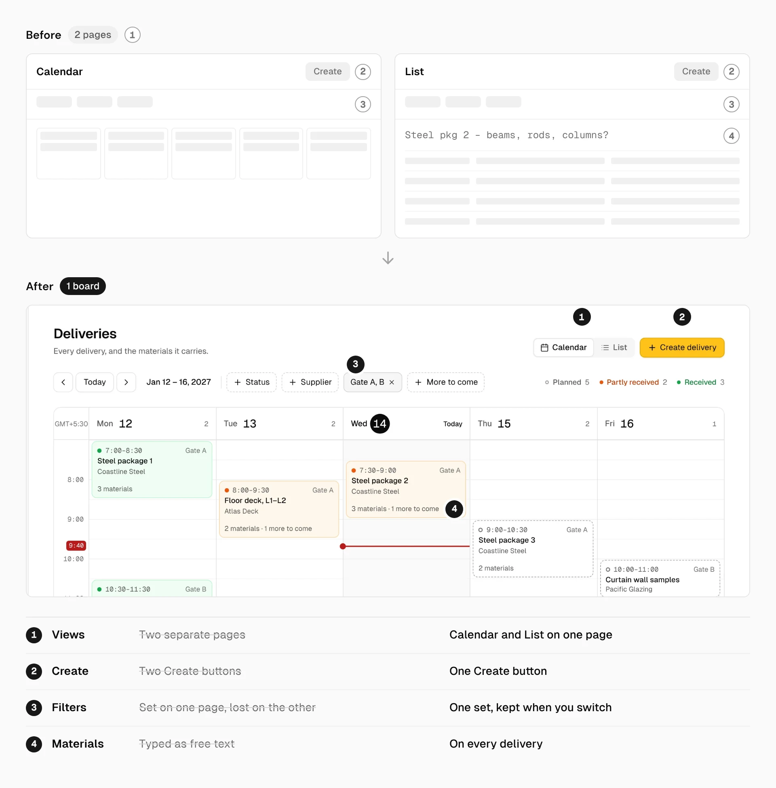
From typing to confirming
The same three questions, answered in a different way.
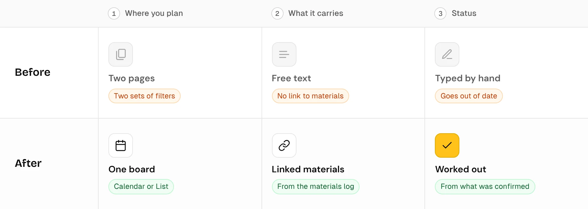
Research
What I learned before designing
I studied how teams work, then designed the page structure, delivery flows and material status, and handed the designs to engineers. The PM owned the requirements and the launch.
Three people touch every delivery
Each one gets only the actions that are theirs. That is what makes the status trustworthy.
- Project team
- Sees every delivery for the week, and every material on its way. Calendar, List, Materials
- Supplier
- Plans what each truck carries, and marks what is still to come. Create, More to come
- Main contractor
- Confirms what actually arrived, at the gate. Only they can. Confirm arrival
Key decisions
Linking every delivery to its materials
Four decisions shaped the board. Each one made the status easier to trust, and each had a cost.
Decision 1
One page, two views
Calendar and List showed the same deliveries on two pages. They now share one page, one set of filters and one Create button.
Trade-off: the new board had to do everything the old list did before we could remove it.
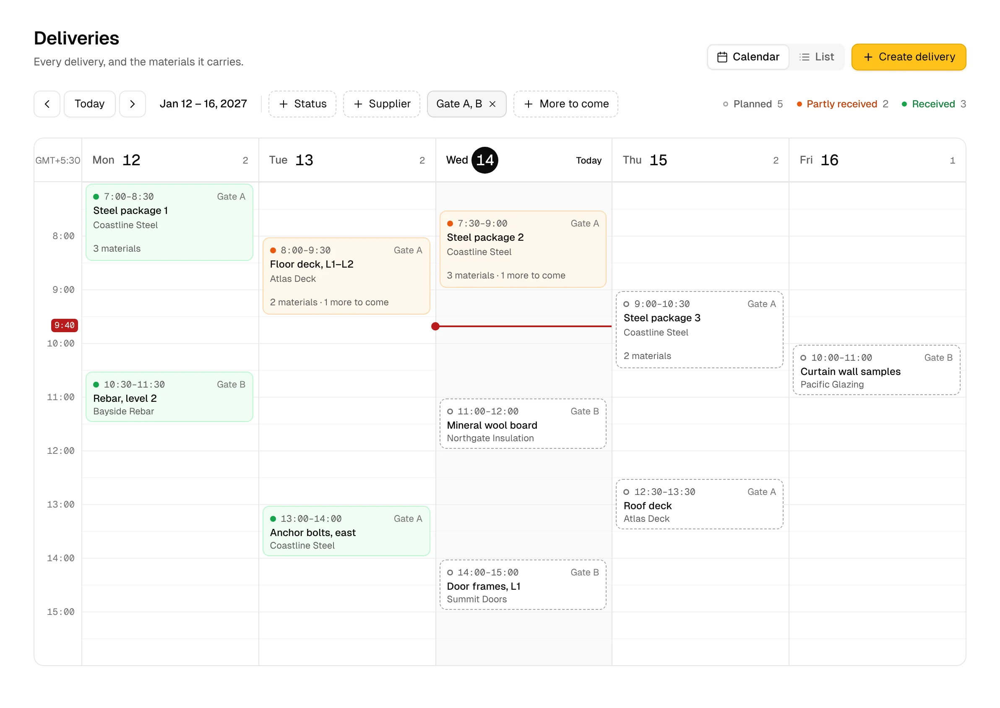
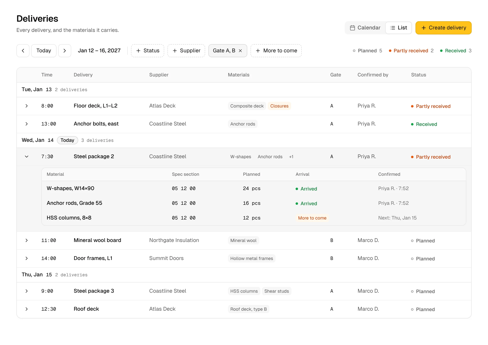
Decision 2
Keep what was planned apart from what arrived
Anyone who creates a delivery can mark “More to come” for each material. But only the main contractor running the site can confirm what really arrived, because only they know what came in.
Trade-off: one more step for the person receiving the delivery.
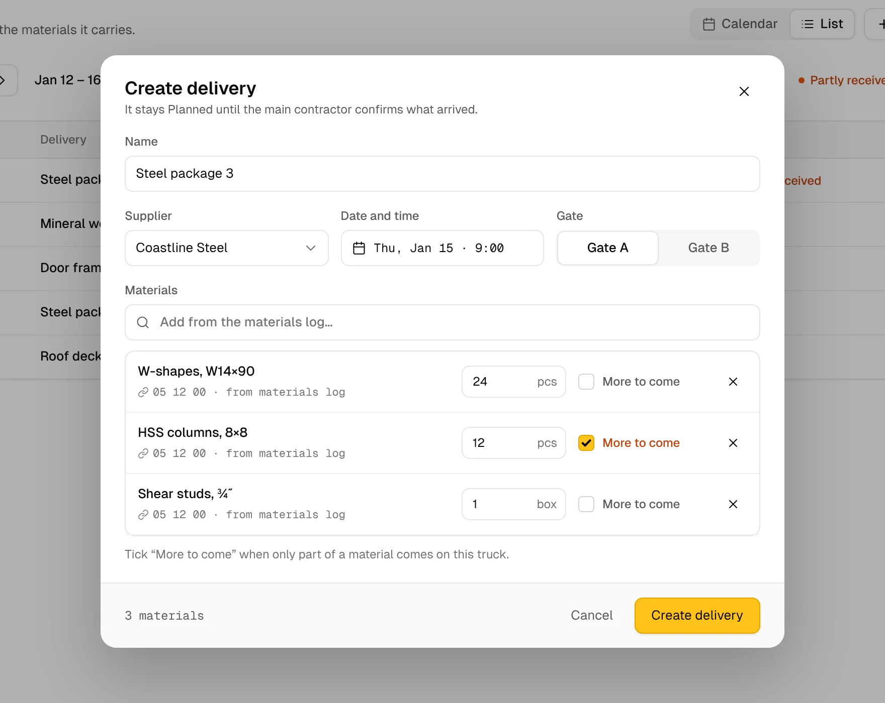
Planning: tick “More to come”
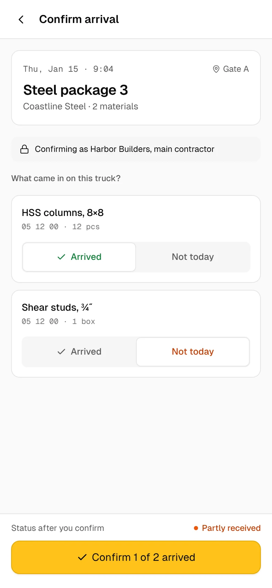
At the gate: confirm what arrived
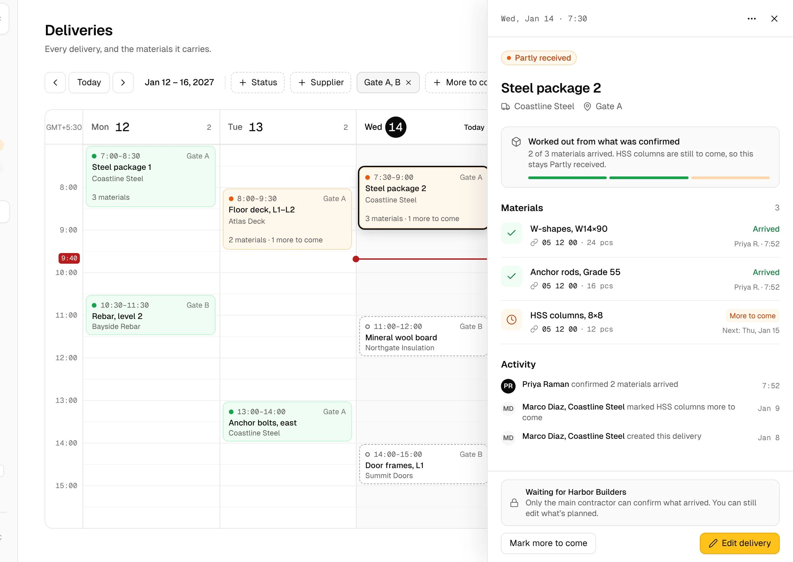
Decision 3
Status is worked out, never typed
Planned, Partly received and Received come from what people confirmed. A status people type goes out of date. A worked-out one can’t.
Trade-off: no way to change it by hand, and counting quantities comes later.
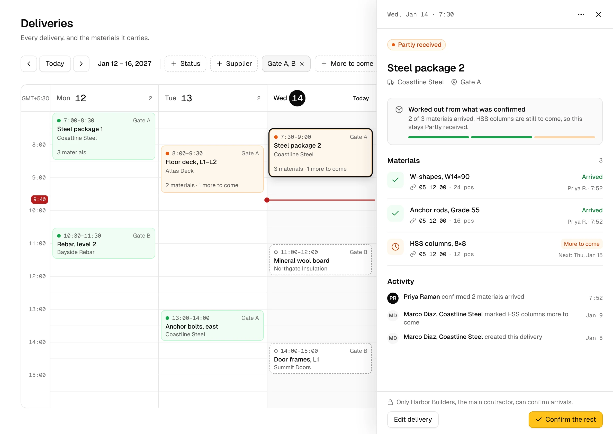
Decision 4
Every material shows the deliveries that carry it
Open a material and see each delivery it comes on, what’s still to come, and its submittal.
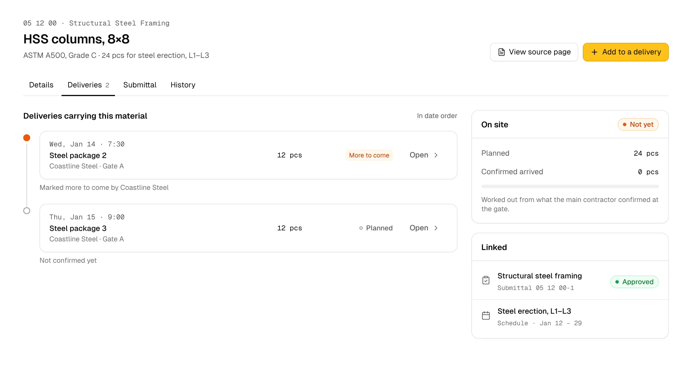
Try it
A working prototype, built from the real screens
Plan a delivery, confirm it at the gate, and watch the status work itself out. It takes about two minutes.
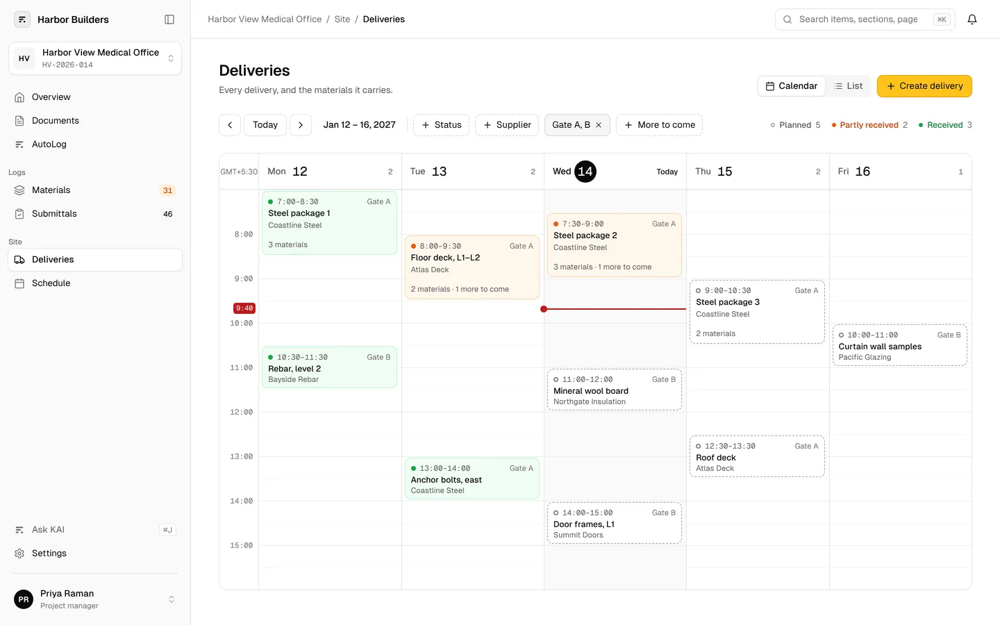
On site
Desk, site office and gate
The same board on a phone at the gate, an iPad in the site office and a laptop at the desk.
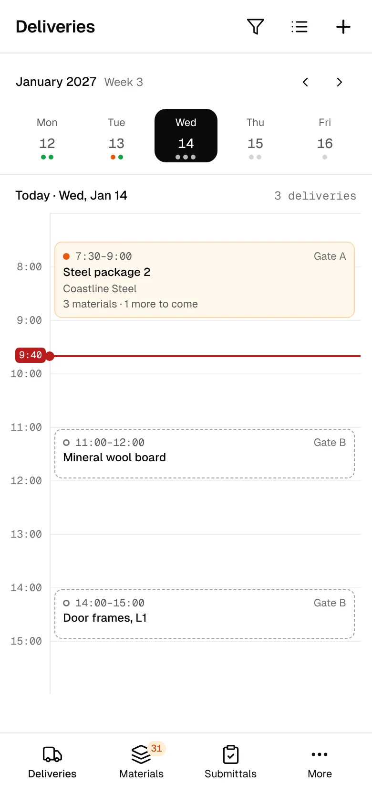
Today’s deliveries
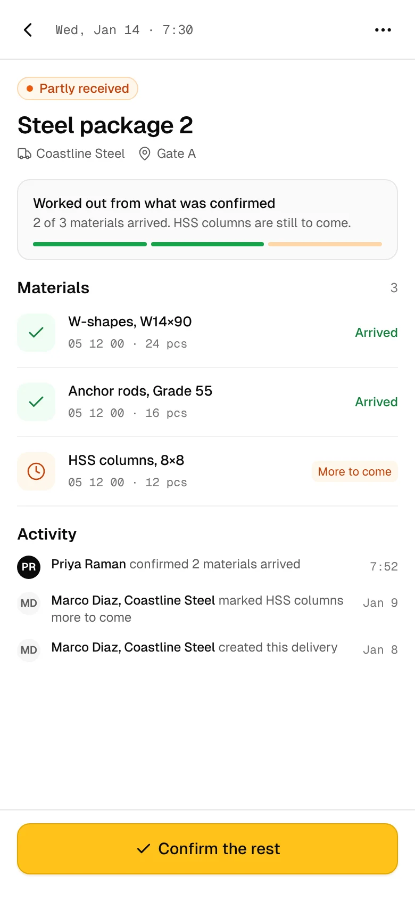
A delivery and its materials
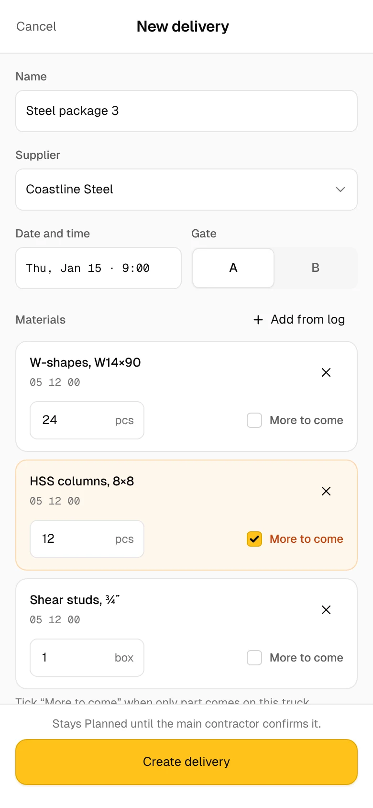
New delivery
Confirm at the gate
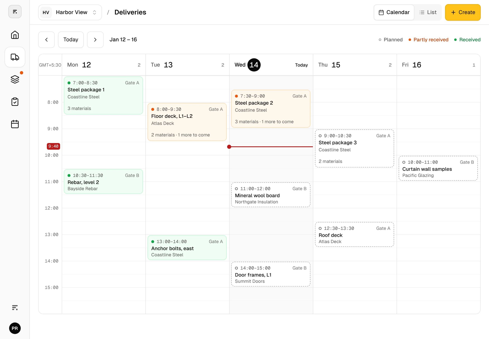
iPad · the week
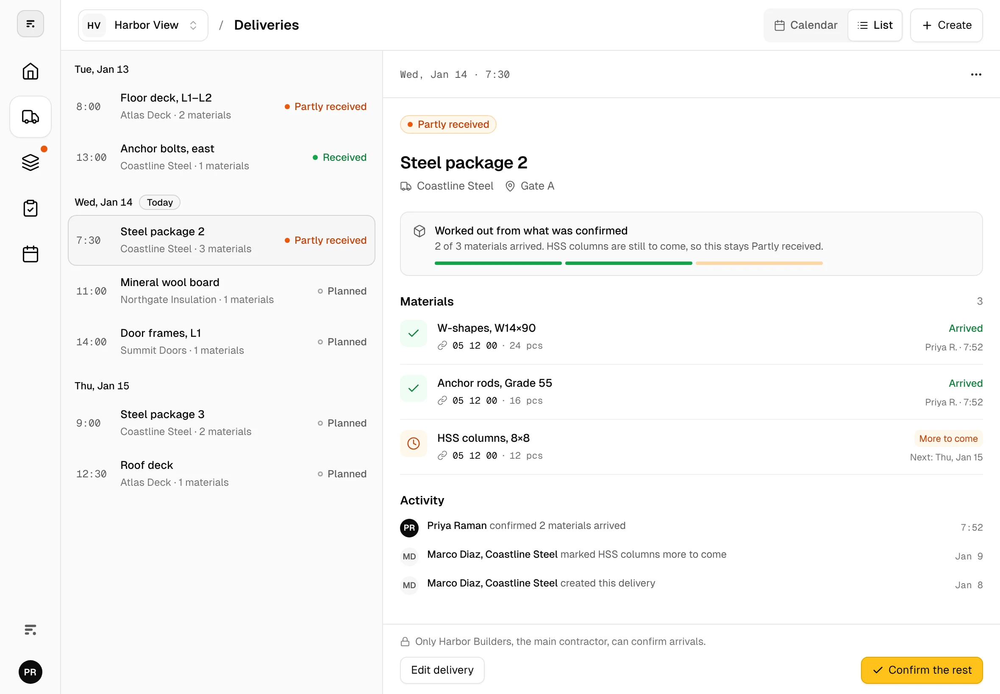
iPad · list and details
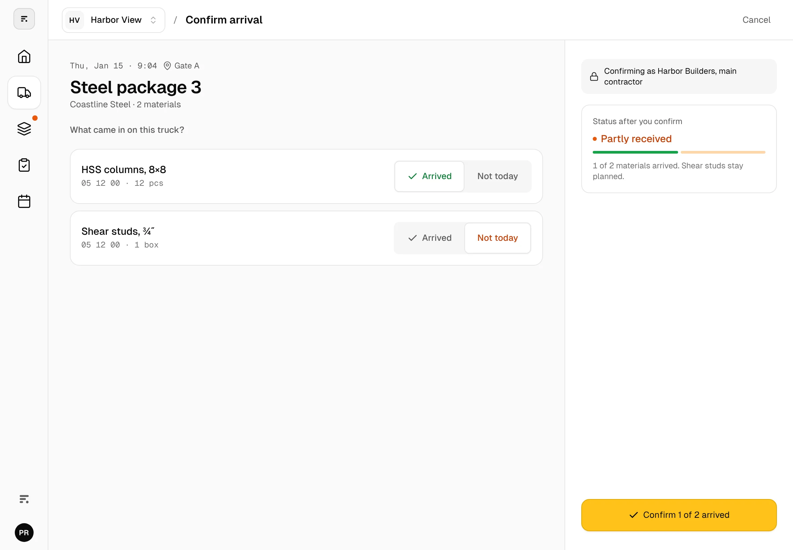
iPad · confirm at the gate
Outcome
Within four weeks, people moved to the new board
9 in 10
delivery visits on the new board from the fourth week. In the first three weeks it was about 8 in 10.
2 → 1
Calendar and List became one board. Weekly customer users stayed steady during the switch.
From product analytics. About 9 in 10 delivery visits come from customers, not Krane’s team (90 days to late October 2026).
Shipped in two steps
- August 2026
- Work starts: page structure, delivery flows, material status.
- September 2026
- Materials linked. Each delivery carries materials from the log.
- October 2026
- Confirm on arrival. Status works itself out.
Designed, in build
Two requests after launch
- Drop-off colours
- Eight colours that read on a site TV and never look like the red, green or amber of a status. Points with the same name share a colour, so the busiest project’s 10 points need only 7.
- Equipment icons
- Crane and forklift icons sit before the company name; placed before the time, they cut it off. 3 in 5 crane deliveries used mobile or rough-terrain cranes, so the first version has three types.
Trade-offs I chose
Looking back
What I’d do next
- I’d change
- Agree when the old pages close, before launch. For the first three weeks, about 2 in 10 delivery visits still went to the old pages.
- I’d test next
- Do people trust a status they no longer type? And do they understand the difference between a planned delivery and a confirmed one?
- Left out on purpose
- Adding materials from a delivery, counting quantities, and tracking the truck.
Let’s talk
I usually reply within 24 hours · It’s --:-- in Coimbatore